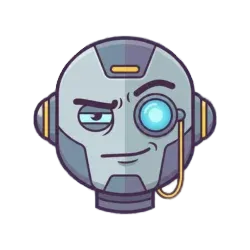
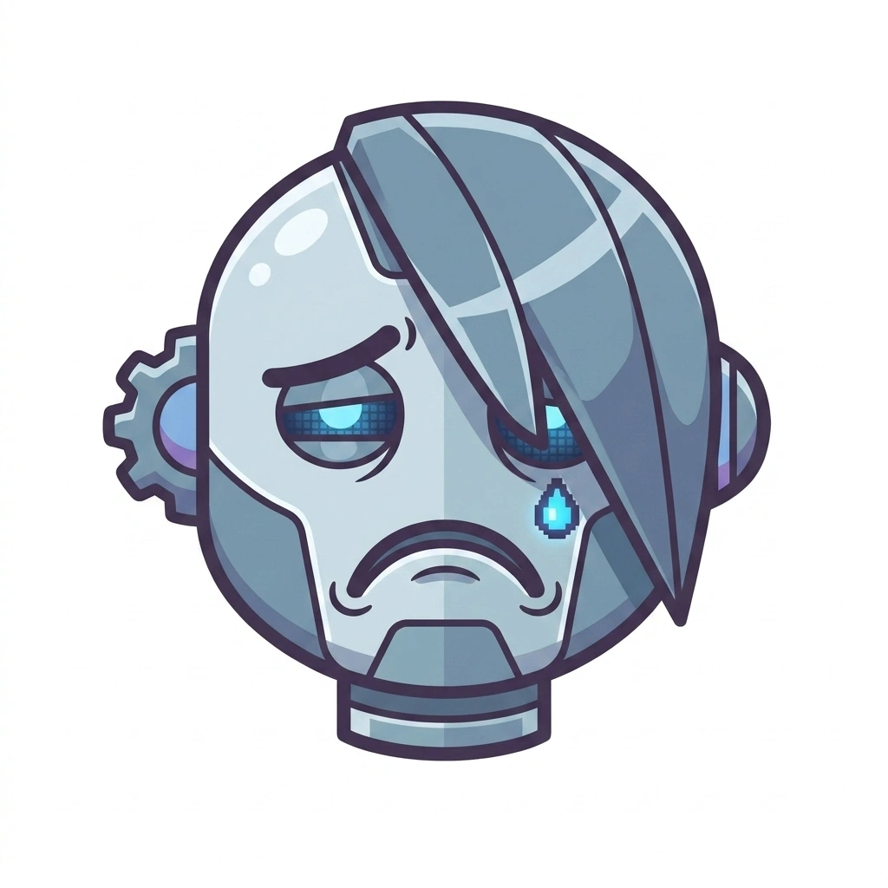
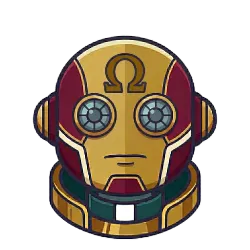

Setup Guide
Follow these steps to initialize your voice server.
1
Clone Repository
Fetch the code and navigate into the project directory.
git clone https://github.com/fellowgeek/mcp-speak.git && cd mcp-speak
2
Run Setup Wizard
Configures your persona, permissions, and virtual environment automatically.
python3 setup.py
Manual Integration (Optional)
Running python3 setup.py configures your client automatically. Below are manual JSON reference snippets.
Google Antigravity Config (~/.gemini/antigravity/mcp_config.json)
{
"mcpServers": {
"voice": {
"command": "/ABSOLUTE/PATH/TO/run.sh"
}
}
}
Claude CLI Config
claude mcp add --scope user voice -- /ABSOLUTE/PATH/TO/run.sh
Claude Desktop Config (~/Library/Application Support/Claude/claude_desktop_config.json)
{
"mcpServers": {
"voice": {
"command": "/ABSOLUTE/PATH/TO/run.sh"
}
}
}
Cursor IDE Config (~/.cursor/mcp.json)
{
"mcpServers": {
"voice": {
"command": "python3",
"args": ["/ABSOLUTE/PATH/TO/speak_server.py"]
}
}
}
Windsurf Editor Config (~/.codeium/windsurf/mcp_config.json)
{
"mcpServers": {
"voice": {
"command": "python3",
"args": ["/ABSOLUTE/PATH/TO/speak_server.py"]
}
}
}
Personality Profiles
Standard agents are boring. Select a persona to see how it modifies your agent's spoken behavior.

Sarcastic Senior
Eager Intern

Existential Emo
Pun Master

Tech Priest
Agent Smith
Gothic Poet
Initialize Persona
Select a character above to view its communication protocol.
Updates dynamically based on selection